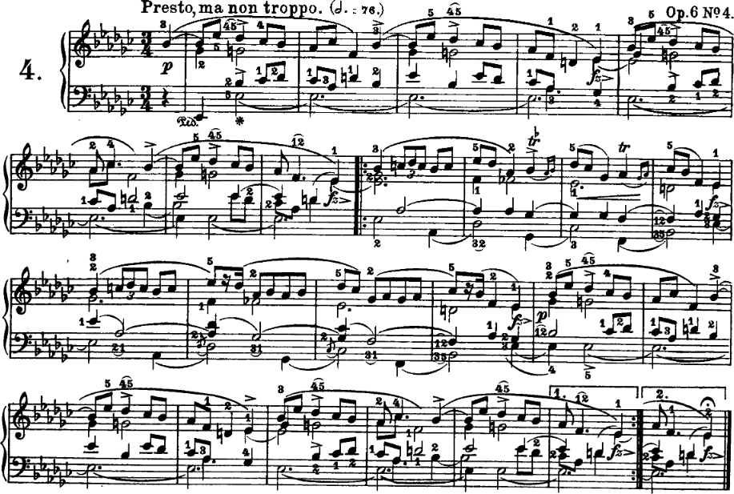

My name is Néstor Nápoles López
I am one of the instructors for MUMT 301.
My background is on Computer Science and Piano Performance.
Currently, I am a PhD candidate on Music Technology.
My research focuses on music theory and artificial intelligence.
I am a big fan of Western tonal music, in particular, piano music. My favorite piano concertos, in order, are:
I also like Frédéric Chopin's piano music. Here is a recording of myself playing Op. 6 No. 4, one of my favorite mazurkas:

I also like some modern music, mainly progressive death metal and other "extreme" metal genres.
Here are some bands that I like, in no particular order:
You can read more about what I do in my personal academic website.